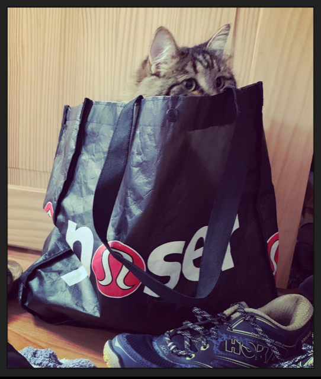
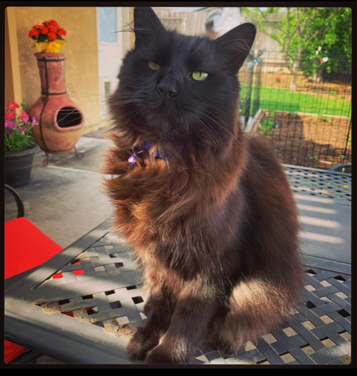

These are the animals that rule our house.
Everyone, meet Bambi.
Bambi was rescued from the animal shelter in Escondido, Ca. We wanted to find a playmate for Bear, our other cat. They are both about 4 years old now and they get along most of the time. Bear likes to bully everyone in the house. So he fights with all of us, including Bambi. Bambi is a big, fluffy cat. Her fur is long and tickles my face when she lays on my chest to sleep. She loves to suckle on my thermal textured pajama shirt at my right shoulder. It is very sweet. And while she does that, she will knead on my neck and cheek. Can be quite painful if I don't keep her claws trimmed.
Bambi was rescued from the animal shelter in Escondido, Ca. We wanted to find a playmate for Bear, our other cat. They are both about 4 years old now and they get along most of the time. Bear likes to bully everyone in the house. So he fights with all of us, including Bambi. Bambi is a big, fluffy cat. Her fur is long and tickles my face when she lays on my chest to sleep. She loves to suckle on my thermal textured pajama shirt at my right shoulder. It is very sweet. And while she does that, she will knead on my neck and cheek. Can be quite painful if I don't keep her claws trimmed.

This here is Bear, the Manx!
Bear is a very special kitty. He is the only living kitty from his litter. His mother ran into an electrical fence when she was pregnant and it made her have her kittens early. Bear was the last one out and the only one to survive. His mother died, too. He is quite the emotional cat. He had no manners, no guidance in any way except from humans. It was rough for us at the beginning. In the hot summer we had to make sure we were fully clothed because whether Bear was happy or mad he always expressed his emotions through biting. Hard! Four years later and I can say he is learning to draw blood with every emotion. I love him so much. He is so loving and sweet, but beware.
Bear is a very special kitty. He is the only living kitty from his litter. His mother ran into an electrical fence when she was pregnant and it made her have her kittens early. Bear was the last one out and the only one to survive. His mother died, too. He is quite the emotional cat. He had no manners, no guidance in any way except from humans. It was rough for us at the beginning. In the hot summer we had to make sure we were fully clothed because whether Bear was happy or mad he always expressed his emotions through biting. Hard! Four years later and I can say he is learning to draw blood with every emotion. I love him so much. He is so loving and sweet, but beware.

These two bright-eyed beasts are Foster(the red) and Sitka(the blue).
These two are wonderful. They are so sweet and kind to everyone, including Bear. Bear will lash out at them but it takes a lot for these dogs to put Bear in his place. They definitely let the cats rule. The only time these dogs don't give much mind to the cats or anyone is when food is being offered. Then all manners and considerate behavior goes right out the door. These two always keep us busy. They love to go on hikes, walks and visits to parks and most of all they love visiting Fiesta Island. It's their doggy DisneyLand. They also love taking trips to the mountains and playing in the snow. And they ALL love laying in our bed with us.
These two are wonderful. They are so sweet and kind to everyone, including Bear. Bear will lash out at them but it takes a lot for these dogs to put Bear in his place. They definitely let the cats rule. The only time these dogs don't give much mind to the cats or anyone is when food is being offered. Then all manners and considerate behavior goes right out the door. These two always keep us busy. They love to go on hikes, walks and visits to parks and most of all they love visiting Fiesta Island. It's their doggy DisneyLand. They also love taking trips to the mountains and playing in the snow. And they ALL love laying in our bed with us.